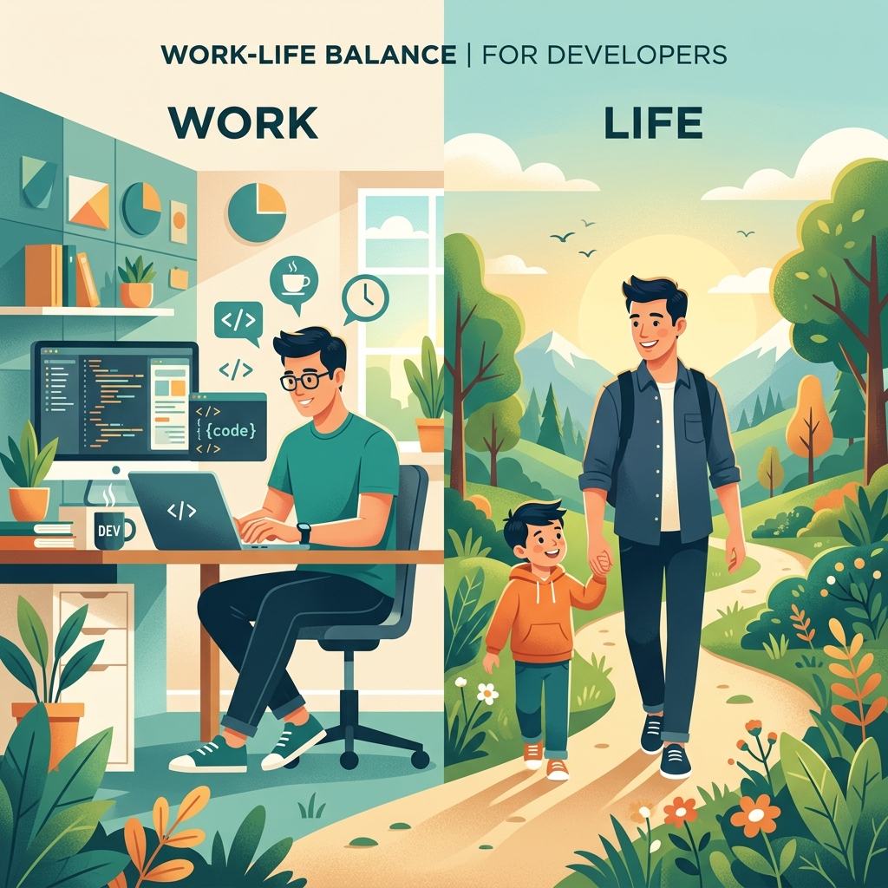

Work-Life Balance as a Developer: Returning with Renewed Energy


For the past two weeks, I haven’t shipped any new features. If you follow my work closely, that might seem unusual. But instead of diving into code, fixing bugs, or launching new capabilities, I made the conscious choice to step back.
I focused entirely on supporting my family’s health and helping them through a tough time.
The Reality of the Grind
As developers, it's incredibly easy to get caught up in the constant cycle of building and shipping. The tech world moves fast, and there's a lingering feeling that if we stop for even a moment, we might fall behind. Our worth often feels tied to our GitHub contributions graph or our latest deployment.
Balancing work and personal life as a developer isn't easy. The lines blur when your office is your laptop, and the endless pursuit of learning new frameworks, optimizing code, and chasing deadlines can quickly become all-consuming.
Finding True Balance
However, when family pulls you away, it gives you immediate clarity. Life outside the IDE matters more than any pull request or milestone. Being present for my loved ones during a challenging time was not just necessary; it was a grounding reminder of what truly fuels us.
The code will always be there, waiting for us to come back to it. Our families, our health, and our well-being are finite and fragile. Protecting them requires intentional choices.
When the storm hits, our first instinct is often to panic. The bugs pile up, the servers struggle, and your personal life simultaneously demands your immediate presence. But stoic philosophy reminds us that stressing out doesn't fix the code, nor does it heal a family member. The most powerful tool a developer—and a person—can possess is a calm, unwavering mind in the face of chaos. By pausing, breathing, and focusing only on what we can control, we stop merely reacting and start smoothly navigating through the hardship. Never give up; just take a step back and let the dust settle.
Books That Kept Me Grounded
During these two weeks, when staring at a code editor wasn't an option, reading provided a much-needed mental anchor. If you ever find yourself needing a mindset shift or struggling to keep your calm, I highly recommend these reads:
-
Meditations by Marcus Aurelius
The ultimate journal on stoicism. It teaches you how to detach from chaos, remain calm, and focus on your inner resilience when things go wrong.
-
The Obstacle Is the Way by Ryan Holiday
A masterclass in turning adversity into an advantage. It reminds us that the hardest moments are exactly what shape us and make us stronger.
-
Deep Work by Cal Newport
While inherently about focus and productivity, its underlying message beautifully reinforces the necessity of drawing strict boundaries between work and the rest of our lives.
Returning with Renewed Energy
Things are running more smoothly now. My family is doing better, and with peace of mind restored, I am ready to jump back into my editor.
Because I allowed myself the time away without guilt, I'm returning not just refreshed, but with a renewed sense of purpose and energy. I’m excited to deliver something fresh and innovative.
Finding harmony between the glowing screen and the real world is challenging, but that balance is exactly what makes both our lives and our progress stronger. Keep building, but don't forget to pause and take care of what really matters.
Explore with AI
Want a quick summary or have specific questions about this post? Use your favorite AI agent to dive deeper into the technical details.